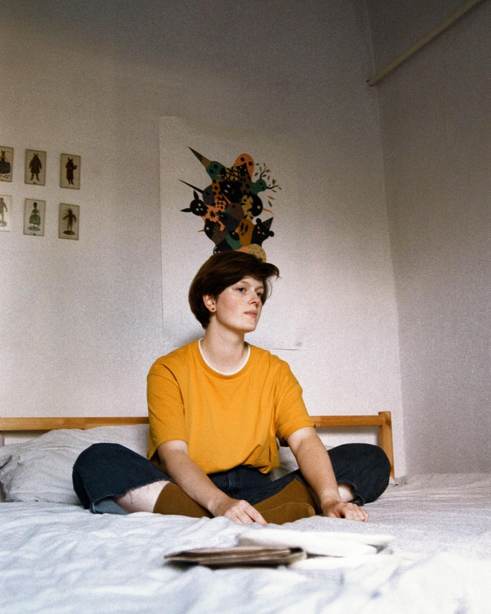
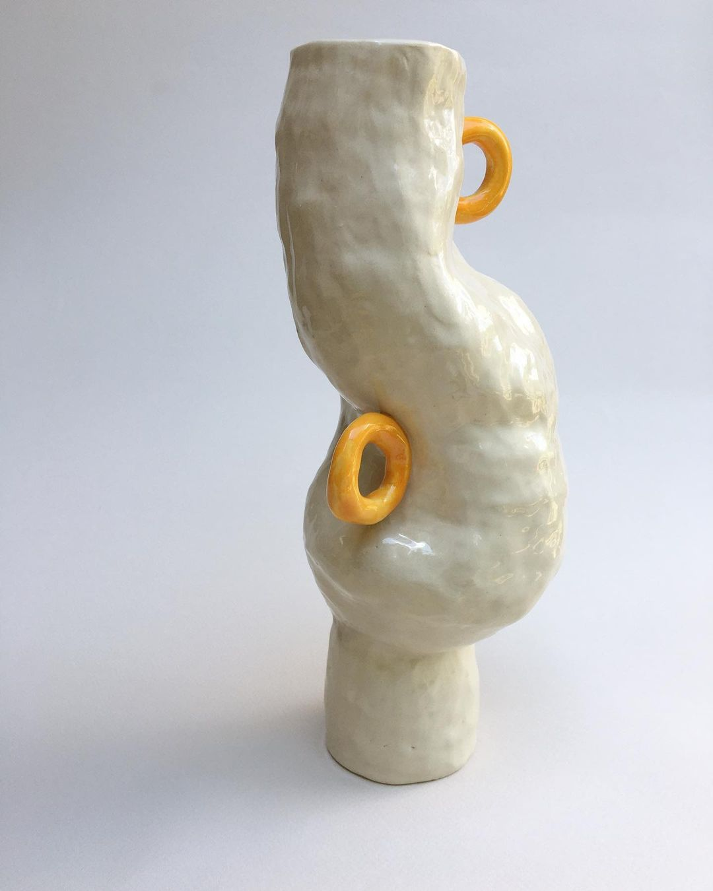
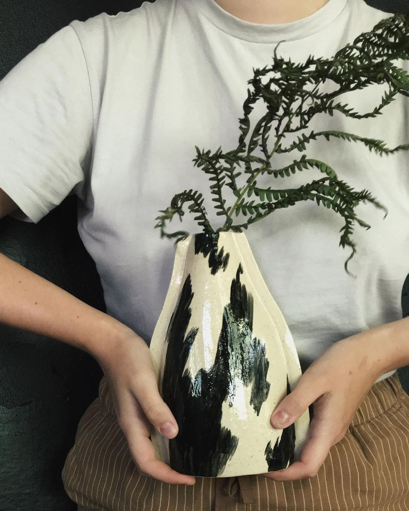
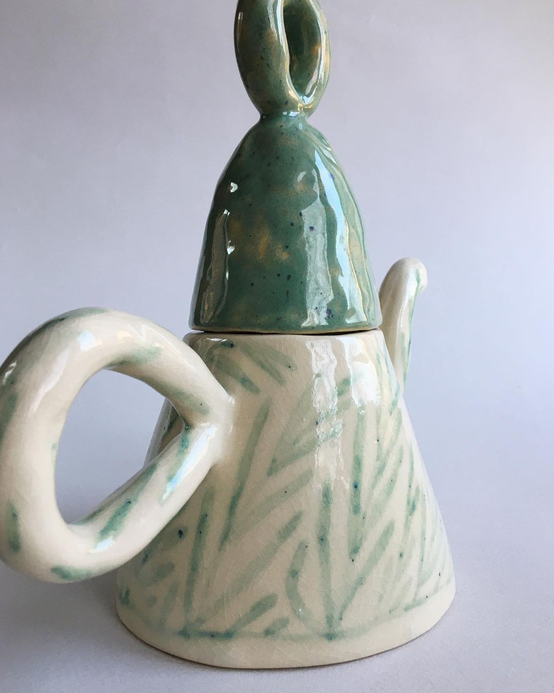
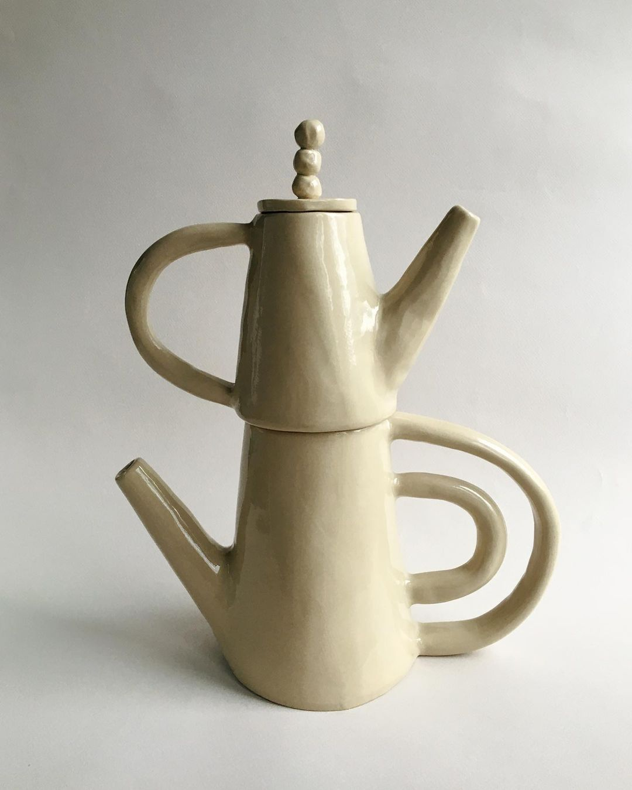
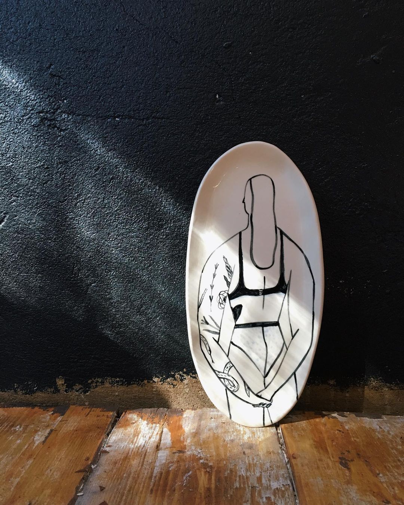
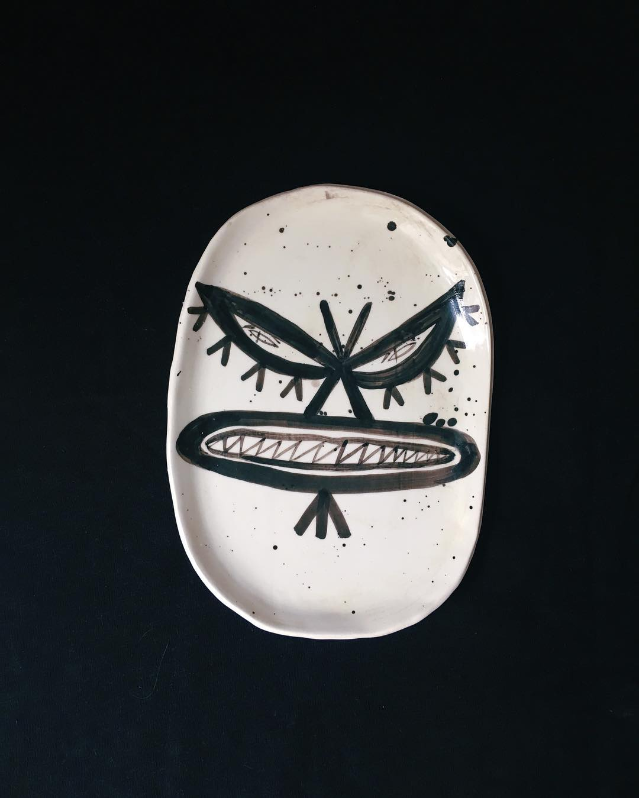
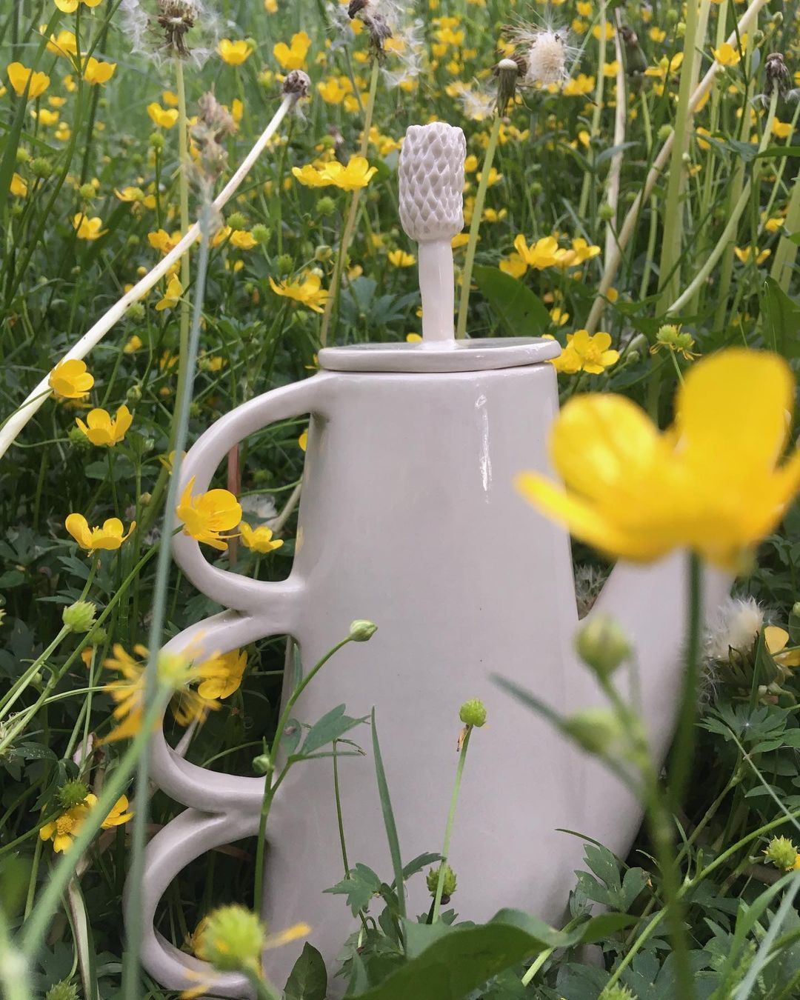
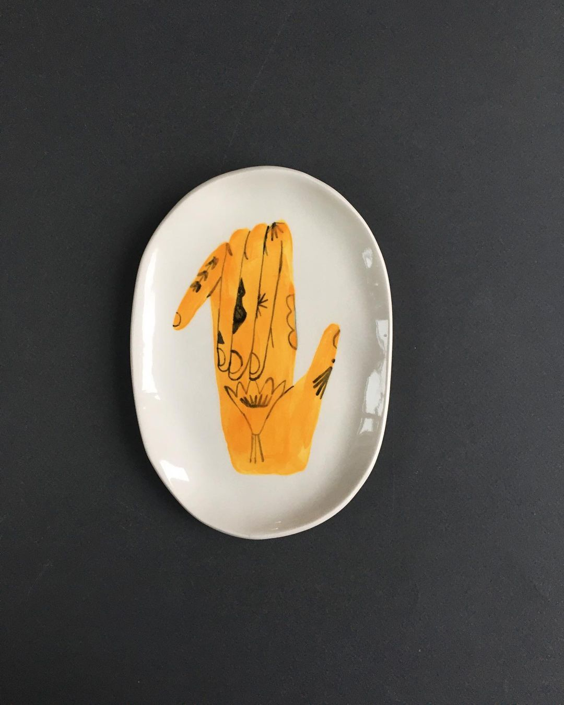

PORFARFOR

меня зовут Лена, сейчас я занимаюсь керамикой и личными проектами по иллюстрации, а ещё учу людей
разным
штукам. вообще я думаю, что учиться и учить - моё самое важное дело, и керамика вписывается в него как
кусочек.
второе важное дело - шутить про всякое и перебарывать страх. по правде, я трусишка и частенько боюсь (тут и
страх отказов, и своей некомпетентности, и много чего еще). и вот я пытаюсь говорить про это и разъёбывать
(или если не получается, то пытаюсь принять), и вот уже страх становится чем-то совсем другим. а шутить
смешные
(или дурацко-смешные) шутки просто помогает, ну вы и сами знаете.
РАБОТЫ










также можно поддержать меня на
патреоне
приобрести работы и записаться на мастер-класс можно через
instagram